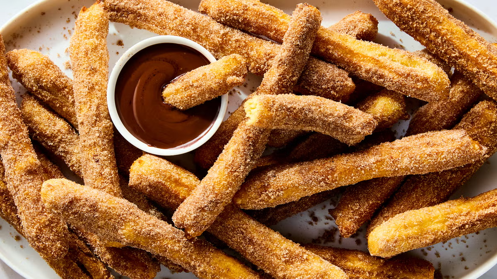

Churros
Churros are crispy, golden sticks of fried dough coated in cinnamon sugar and often served with rich
chocolate sauce. A popular street treat in Spain and Latin America, churros are easy to make at home and
perfect for a sweet indulgence.
Preparation:
15 minutes
Cook:
20 minutes
Total:
35 minutes
Ingredients:
- 1 cup water
- 2½ tablespoons sugar
- ½ teaspoon salt
- 2 tablespoons vegetable oil
- 1 cup all-purpose flour
- Oil for frying (vegetable or canola)
- ½ cup sugar + 1 teaspoon ground cinnamon (for coating)
Optional Chocolate Sauce:
- ½ cup heavy cream
- 4 oz dark chocolate, chopped
- 1 tablespoon sugar (optional)
- Pinch of salt
Instructions:
- In a saucepan, combine water, sugar, salt, and oil. Bring to a boil over medium heat, then remove
from heat and stir in flour until a ball forms.
- Let the dough cool slightly, then transfer to a piping bag fitted with a large star tip.
- Heat oil in a deep skillet or pot to 350–375°F (175–190°C).
- Pipe 4–6 inch strips of dough into the hot oil, cutting with scissors. Fry in batches until golden
brown, turning occasionally, about 2–3 minutes per side.
- Remove with a slotted spoon and drain on paper towels. Roll warm churros in the cinnamon sugar
mixture.
- For chocolate sauce, heat cream in a small saucepan until just simmering. Remove from heat, add
chocolate, and stir until smooth. Add sugar and salt to taste.
- Serve churros warm with chocolate sauce for dipping.